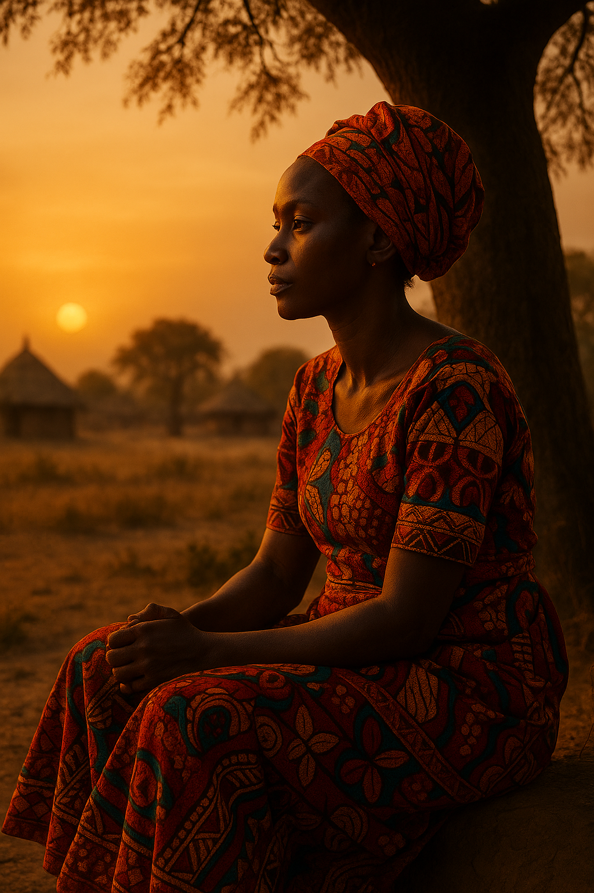
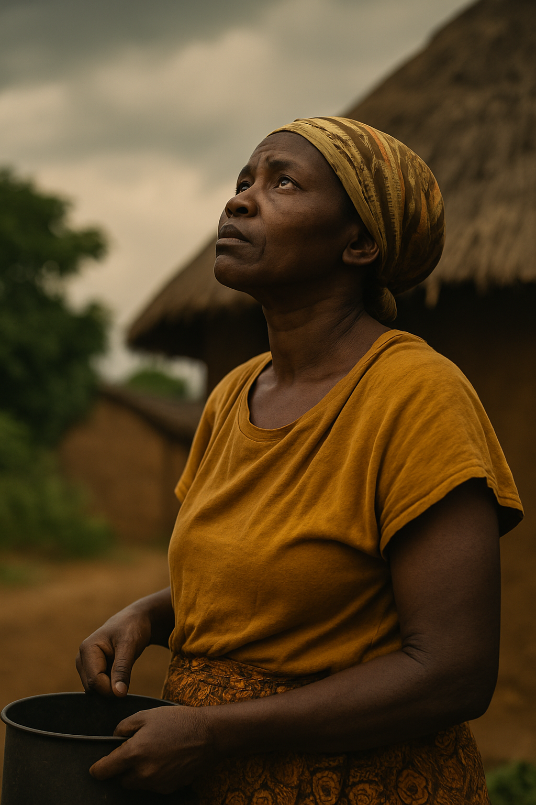
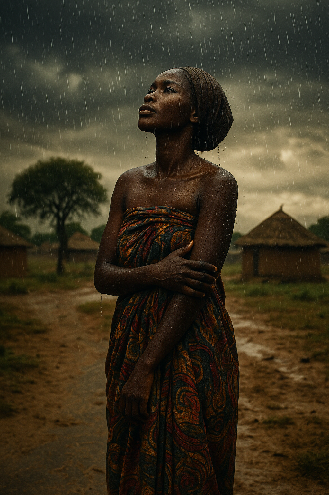

The Strength in Her Silence
She never raised her voice, but her presence spoke louder than words. She carried the weight of generations, not on her back—but in her heart.
Every day, she woke before the sun. Not because she had to, but because she knew that life didn't wait for sympathy. She loved without asking for anything in return. She suffered without making others uncomfortable. And she smiled — not because she had no pain, but because she refused to pass it on.
Her silence wasn’t weakness. It was her strength. It was the way she protected others while she bled quietly inside.
So today, before you speak… pause. And listen to the quiet strength of women like her. She’s not loud. But she is unbreakable.
💬 If this touched you, share it. Somewhere, someone is holding back tears in silence.
She Prayed With Her Eyes Open
She didn’t wait for a quiet place. Her spirit whispered prayers while working the soil, while washing, while waiting. There was no need to close her eyes—because every blink was a prayer, and every breath was a sacred plea.
She didn’t quote scriptures from memory. She lived them. Her faith wasn’t in how loud she could shout “Amen,” but how softly she could carry the burdens of those around her.
They called her ordinary. But heaven knew her name. Because she prayed with her life, not just her lips. And that kind of prayer… always reaches the skies.
💬 If this touched you, share it. Her story is a quiet reminder that the divine listens, even in silence.
When the Rain Fell, I Grew
They said the rain would wash everything away, but for me, it awakened something deeper. As the clouds darkened and the first drops hit the dry soil, I stood outside — barefoot, open, vulnerable.
The rain didn’t scare me. It reminded me that everything soft has strength. That even the sky breaks open just to bring life to the ground.
That day, I didn’t just get wet. I grew. In courage. In peace. In knowing that growth doesn’t always come from sunshine. Sometimes, it’s the storms that make us bloom.
💬 If this moved you, pass it on. Someone else may be standing in their own rain, waiting for the lesson to bloom.
